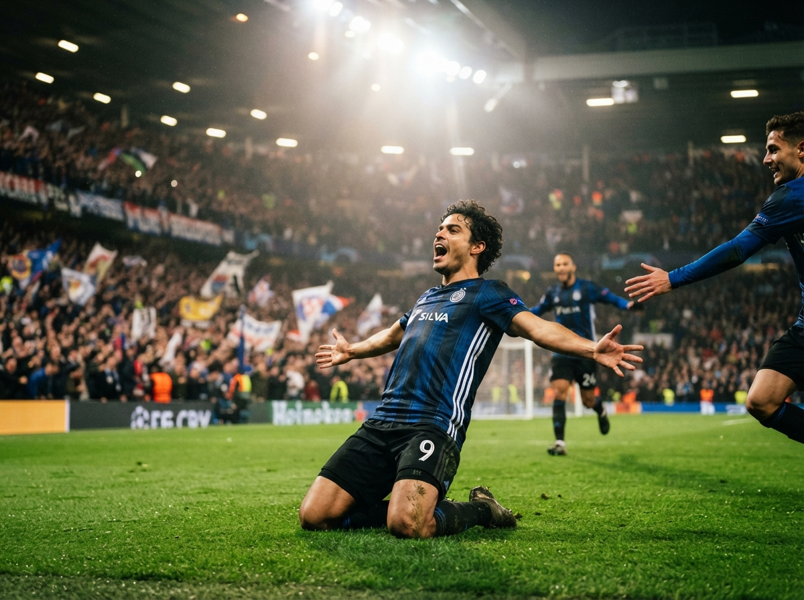
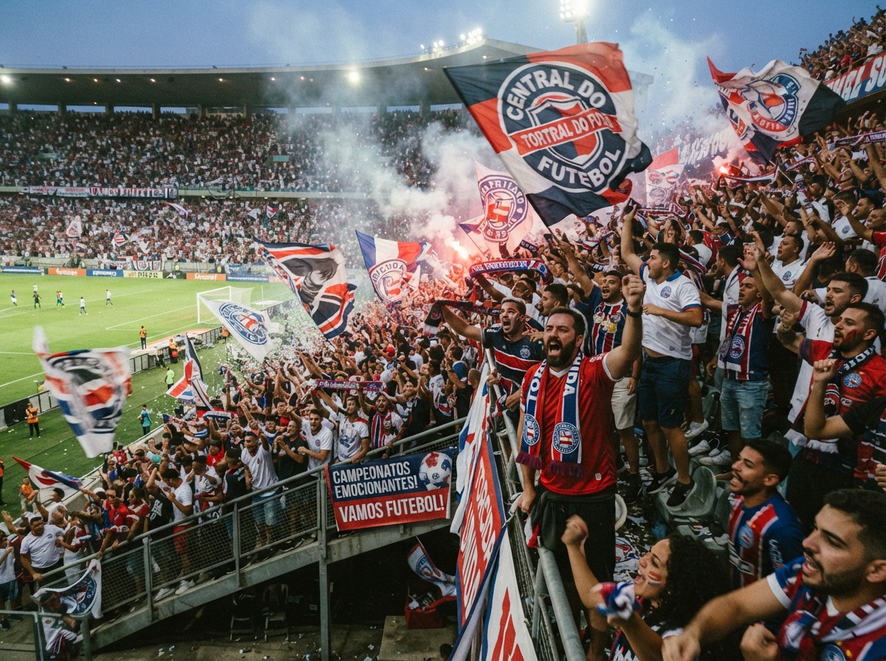

⚽ Central do Futebol
Início
História
Regras
Posições
Campeonatos
Resultados
Times
Jogadores
Treinamento
Quiz
Tabela
Notícias
Perfil
Galeria
Contato
Galeria
Momentos do futebol
O futebol também é feito de imagens, torcida e grandes momentos.

Gol decisivo:
A emoção de balançar as redes no estádio lotado.

Festa nas arquibancadas:
Bandeiras e apoio incondicional da torcida.
Clique aqui